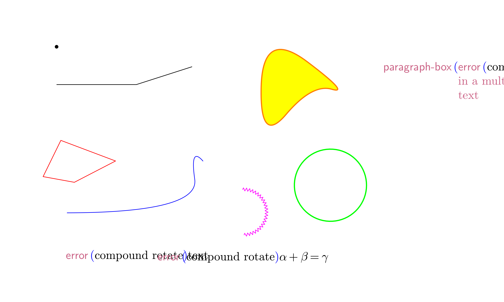

TeXmacs provides a set of graphic primitives, which can be accessed in several ways: interactively with the Texmacs editor, directly through the TeXmacs source code (TeXmacs trees) or through (as trees). The manual at describes interactive generation and editing of drawings.
In this note, we shall step through the generation of a simple drawing starting from Scheme code and translating it into a TeXmacs tree which then displays the graphics. We assume that the reader is familiar with simple Scheme syntax. Two possible web resources for learning are the book Scheme programming and Yet Another Scheme Tutorial by Takafumi Shido.
We want to draw a triangle inscribed inside a semicircle, mark its vertices with letters and decorate the drawing with the text TeXmacs.
The most comfortable way of generating a drawing with is within a session, so that is the way we'll take in this note. We'll see in other notes how to blend seamlessly graphics in a document and generate it through external source files.
The first step in working with a session is opening it, with . As a side step, it is convenient to select in the preferences box under ; this helps coding in by highlighting the parenthesis that matches the one next to the cursor.
Now we will insert our commands at the prompt. We place small comments within text fields inserted by choosing in the contextual menu, while longer explanations fit better in breaks between sessions.
The Scheme function we just defined generates a TeXmacs graphics point parametrized by its and coordinates.
is a TeXmacs graphics primitive that represents a point and expects two strings. It is represented in with a list of three elements, the first element in the list being the symbol (since is a symbol, it fits well within the quasiquote that also defines the list).
Using the function we shall now define a few points.
The interpreter expects one expression per prompt (evaluates only the first one it finds in each prompt), so we enter the expressions we need in separate prompts; the code in external programs is—of course—more compact.
Let us take a look at the points we just defined. To display them as a TeXmacs graphics, we need to insert them in a canvas with the primitive, entered in as graphics. The expression that starts with graphics contains, after the symbol graphics, a list of graphical objects; we will then write the canvas with our points as with proper quasi- and unquoting (slightly different in the final form of the expression). Since by itself yields a rather large canvas, we size it down enclosing it in a primitive which specifies the geometry. The construct needs to be quasiquoted as and graphics are Scheme symbols, so that the pA, pB and pC variables, which represent the points, must be unquoted. Finally, everything has to be wrapped in the stree->tree function to become a TeXmacs tree. The result is a graphical representation of the three points:
This example, with constructs boxed inside each other, is typical of : we compose a list out of other lists. In this case we pass then the list, made of lists, symbols and strings, to the function that turns it into a TeXmacs tree.
The next step is composing more complex graphical objects using the points we defined.
We will use the TeXmacs graphical objects , , and . Their meaning and syntax is described in the following table:
| object | description | Scheme syntax |
an arc of circle, defined by three points |
||
a polyline, defined by two or more points |
||
a closed polyline, defined by three or more points |
||
a text box, whose position is defined with a single point |
Before composing the full drawing, let us take a look at one of the constructs; as an example we choose . We place it as usual inside a construct to select the color and we wrap the up in the primitive, which is in turn enclosed in its own which sets the property of the graphics object:
We are ready to compose our drawing; as usual the syntax is
properly enclosed in other constructs (we change the linewidth as well as the color and we set the font shape for the whole graphics to italics), with the appropriate sequence of quasiquoting and unquotings:
In follow-up tutorials we will see how to embed seamlessly graphics in a document using the environment and how to generate them from external files.
As a conclusion of this note, here is a collection of TeXmacs graphical objects, illustrating a few possibilities:
